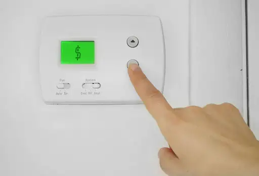

July 15, 2021
Are you ready for summer to be over yet? July and August are typically the hottest months of the year in Texarkana, with temperatures averaging around 93.7°F and reaching a scorching 116°F on sunny days. And while it’s important to stay cool at home and work, running the air conditioner on full blast every day can have a significant impact on your electrical bill.
Here are some helpful ways to save money on your air conditioning each month.
Program your thermostat while you’re away.
Whether you’re heading out on a holiday this summer, or just going to work during the day, it doesn’t make sense to spend money cooling your home when you’re not there! Program your thermostat to start cooling off when you leave work so your home is nice and cool when you arrive. Today’s smart thermostats can even use your phone’s GPS data to automatically adjust your home’s climate based on your location.
Increasing your home’s temperature by 7°–10° while you’re away during the day could save you up to 10% on your monthly energy bill!
Don’t skip out on maintenance.
We get it—the last thing you want to do when trying to save money is to spend more money on maintenance. However, having your system regularly maintained can help prevent costly breakdowns. Our comprehensive maintenance and safety check includes cleaning your system, inspecting the parts, changing the filter, and more.
If your air conditioner is nearing the end of its lifespan, consider upgrading to an energy-efficient model with variable speed fans.
Turn on your ceiling fans to circulate the cool air.
Your ceiling fans can help boost the effectiveness of your air conditioner by circulating the cool air throughout your home. Creating a cool breeze with your ceiling fans can reduce your home’s temperature by as much as 4°, allowing you to keep your thermostat set just a bit higher than you normally would. Set your fan blades to spin counter-clockwise to push the cool air back down into the room.
Don’t overwork your air conditioner.
Speaking of the ideal temperature to set your thermostat at… did you know that the recommended temperature for your air conditioner is 78°F? If that seems warmer than you’re used to, consider increasing the temperature by 1°–2° per week in order to adjust.
Avoid creating unnecessary heat in your home.
It might seem like common sense, but one of the best ways to save money on your air conditioning bills is to avoid increasing the temperature in your home. Keep your blinds closed during the day, make sure your windows and doors are properly sealed, and resist the urge to bake anything in the oven when possible.
Goff HVAC is proud to provide homeowners in Texarkana, TX, with the professional, high-quality air conditioning service they need to stay cool during a Texas summer. Visit our website to learn more about our services or call 903-838-6923 to get in touch with us today!